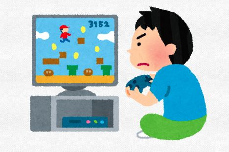
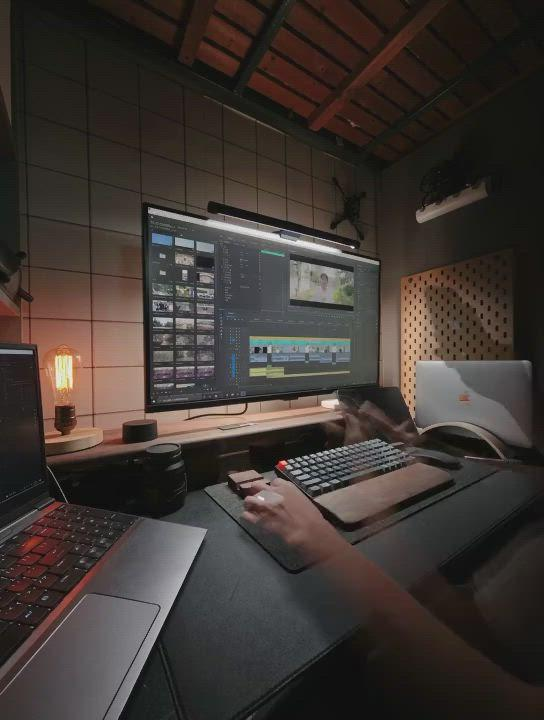

趣味
ここでは私の趣味を紹介しています。
ゲーム

ゲームはジャンルを問わず幅広くプレイしており、特にオンラインゲームやアクションゲームを楽しんでいます。 友人と協力してプレイすることで、コミュニケーション力や状況判断力も身につけています。 また、PC環境やデバイスにも興味があり、快適なゲーム環境づくりも楽しみの一つです。 最近はモニター配置やデスク周りのレイアウトにもこだわり、集中しやすいゲーム環境を整えています。
動画編集

動画編集では、カット編集やテロップ作成、BGM・効果音の挿入などを行っています。 編集ソフトを使いながら、見やすく伝わりやすい動画制作を意識しています。 映像の構成やテンポを工夫し、視聴者が楽しめる動画になるよう取り組んでいます。 最近は色調補正やアニメーション編集にも挑戦し、より完成度の高い映像制作を目指しています。